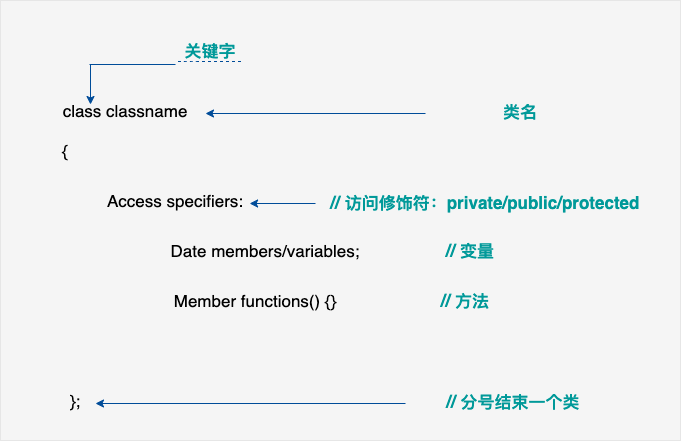

一月十日培训内容¶
因为这次的培训负责人不是我，所以本次的培训内容只是我个人推荐大家了解的一些资源
培训内容介绍¶
掌握C++和python的语法基础
熟悉面向对象编程的基本概念，能看懂C++和python中面向对象编程的相关代码
熟悉xml这类标签语言的特点，能够看懂xml代码的内容结构
了解cmake的一些概念
详细培训内容¶
python的语法基础¶
如果大家之前没有接触过或者对python这么语言不是特别熟悉，可以从下面两个网站开始学习，至少熟悉一些基本的语法常识，如果在以后的编写过程中遇到不确定的地方，可以回过头来查询：
c++的语法基础¶
与前面的python相似，c++也只是要求掌握基础的语法，能理解面向对象编程的代码即可，在后面的实践中会更加逐渐熟悉起来。这里同样给出推荐的方便入门和简单查询的网站和资料：
《C++Primer》该书较为全面，但只是起到类似字典用来查询的作用，不太适合入门
这是这次培训的一些内容：
1. 从Hello World开始¶
//main.cpp
#include <iostream> //标准输入输出库 **stdio.h**
int main() {
int v1;
std::cin >> v1; //从输入流中读取数值
std::cout << "Hello, World!" << std::endl; //输出内容到输出流中
return 0;
}
与C不同的地方：¶
头文件的引用可以不加上
.hstd::：命名空间（name space），用于管理每个库中的各种名称，比如变量名、函数名，，防止不同的库中存在相同名称的时候导致命名冲突，相当于某个库中变量名的前缀。标准库（不仅仅包括iostream中的内容）中定义的所有名字都放在了std命名空间中。cin, cout标准输入对象和标准输出对象
使用G++编译程序¶
编译并构建程序
g++ -o hw main.cpp运行程序
./hw
如果没有出错的话，等待输入一个字符后程序将向屏幕输出 Hello, World!
运行结果：
1
Hello, World!
使用cmake构建程序¶
当工程更为复杂的时候，比如工程中包含多个源文件以及各种依赖等等，直接使用g++命令来编译构建程序便会显得极其繁琐，此时可以采用cmake来辅助构建整个工程
编写
CMakeLists.txt文件
cmake_minimum_required(VERSION 3.12) #最低版本要求
project(Helloworld) #项目名称
set(CMAKE_CXX_STANDARD 14) #C++标准
set(VARXXX "hello hello")
message(${CMAKE_CXX_STANDARD})
message(CMAKE_CXX_STANDARD)
add_executable(Helloworld main.cpp) #添加该工程的可执行文件
使用cmake配置项目：
mkdir build_result_dir_name
cd build_result_dir_name
cmake ../
使用cmake构建项目：
cmake --build ./
运行程序
./Helloworld
如果没有出错，应该会看到和上面一样的结果
2. 认识C++的类¶
定义一个类

#include <string>
#include <iostream>
class Sales_data {
friend Sales_data add(const Sales_data&, const Sales_data&);
friend std::ostream &print(std::ostream&, const Sales_data&);
friend std::istream &read(std::istream&, Sales_data&);
public:
// constructors
Sales_data() = default;
Sales_data(const std::string &s): bookNo(s) { }
Sales_data(const std::string &s, unsigned n, double p):
bookNo(s), units_sold(n), revenue(p*n) { }
Sales_data(std::istream &);
~Sales_data() {};
// operations on Sales_data objects
std::string isbn() const { return bookNo; }
Sales_data& combine(const Sales_data&);
double avg_price() const;
private:
std::string bookNo;
unsigned units_sold = 0;
double revenue = 0.0;
};
Sales_data sales_data1;
// nonmember Sales_data interface functions
Sales_data add(const Sales_data&, const Sales_data&);
std::ostream &print(std::ostream&, const Sales_data&);
std::istream &read(std::istream&, Sales_data&);
// used in future chapters
inline
bool compareIsbn(const Sales_data &lhs, const Sales_data &rhs)
{
return lhs.isbn() < rhs.isbn();
}
访问修饰符
public可以从类的外部（不是类的成员）访问、使用private不可以从类的外部使用，只能在类内部使用
类的成员：所有声明在类内部的变量和函数都为类的成员，类的成员函数的定义可以写在类的外面
构造函数和析构函数：类的构造函数是类的一种特殊的成员函数，它会在每次创建类的新对象时执行。构造函数的名称与类的名称是完全相同的，并且不会返回任何类型，也不会返回 void。构造函数可用于为某些成员变量设置初始值。
this指针：在 C++ 中，每一个对象都能通过 this 指针来访问自己的地址。this 指针是所有成员函数的隐含参数。因此，在成员函数内部，它可以用来指向调用对象。
const和引用
如何使用类
静态分配内存：向使用定义变量一个定义一个类的实例
直接初始化和拷贝初始化
动态分配内存：使用
new和delete使用类的成员和成员函数
string类和vector类¶
同样位于std命名空间中
string类
初始化string类
std::string s1; std::string s2 = s1; std::string s3 = "hello world"; std::string s4(10,'c'); std::string s5 = std::string(10,'c');
string类的成员
输入输出运算符：
>> <<
本次任务¶
编写一个
Car类，这个类需要定义car的二维坐标，二维速度（线速度和角速度）等其他自定义成员变量
这个类需要有如下成员函数：
Run(...)Stop()SetLinearSpeed(...)：设置线速度SetAngularSpeed(...)：设置角速度
调用
Run()可以将Car当前的坐标和速度值实时打印在控制台上调用
Stop()则结束打印在
main.cpp调用该类，要求将Car类编译成静态连接库和动态连接库自行编写CMakeList.txt，使用cmake构建该工程
（选作）申请一个github账号，使用git工具将本项目上传到自己的github仓库中